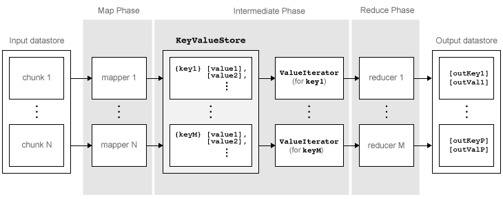

Getting Started with MapReduce
As the number and type of data acquisition devices grows annually, the sheer size and rate of data being collected is rapidly expanding. These big data sets can contain gigabytes or terabytes of data, and can grow on the order of megabytes or gigabytes per day. While the collection of this information presents opportunities for insight, it also presents many challenges. Most algorithms are not designed to process big data sets in a reasonable amount of time or with a reasonable amount of memory. MapReduce allows you to meet many of these challenges to gain important insights from large data sets.
What Is MapReduce?
MapReduce is a programming technique for analyzing data sets that do not fit in memory. You
may be familiar with Hadoop® MapReduce, which is a popular implementation that works with the Hadoop Distributed File System (HDFS™). MATLAB® provides a slightly different implementation of the MapReduce technique with
the mapreduce function.
mapreduce uses a datastore to process data in small blocks that
individually fit into memory. Each block goes through a Map phase, which formats the data to
be processed. Then the intermediate data blocks go through a Reduce phase, which aggregates
the intermediate results to produce a final result. The Map and Reduce phases are encoded by
map and reduce functions, which are primary
inputs to mapreduce. There are endless combinations of map and reduce
functions to process data, so this technique is both flexible and extremely powerful for
tackling large data processing tasks.
mapreduce lends itself to being extended
to run in several environments. For more information about these capabilities,
see Speed Up and Deploy MapReduce Using Other Products.
The utility of the mapreduce function lies
in its ability to perform calculations on large collections of data.
Thus, mapreduce is not well-suited for performing
calculations on normal sized data sets which
can be loaded directly into computer memory and analyzed with traditional
techniques. Instead, use mapreduce to perform
a statistical or analytical calculation on a data set that does not
fit in memory.
Each call to the map or reduce function by mapreduce is
independent of all others. For example, a call to the map function
cannot depend on inputs or results from a previous call to the map
function. It is best to break up such calculations into multiple calls
to mapreduce.
MapReduce Algorithm Phases
mapreduce moves each block of data in the input datastore through several
phases before reaching the final output. The following figure outlines the phases of the
algorithm for mapreduce.

The algorithm has the following steps:
mapreducereads a block of data from the input datastore using[data,info] = read(ds), and then calls the map function to work on that block.The map function receives the block of data, organizes it or performs a precursory calculation, and then uses the
addandaddmultifunctions to add key-value pairs to an intermediate data storage object called aKeyValueStore. The number of calls to the map function bymapreduceis equal to the number of blocks in the input datastore.After the map function works on all of the blocks of data in the datastore,
mapreducegroups all of the values in the intermediateKeyValueStoreobject by unique key.Next,
mapreducecalls the reduce function once for each unique key added by the map function. Each unique key can have many associated values.mapreducepasses the values to the reduce function as aValueIteratorobject, which is an object used to iterate over the values. TheValueIteratorobject for each unique key contains all the associated values for that key.The reduce function uses the
hasnextandgetnextfunctions to iterate through the values in theValueIteratorobject one at a time. Then, after aggregating the intermediate results from the map function, the reduce function adds final key-value pairs to the output using theaddandaddmultifunctions. The order of the keys in the output is the same as the order in which the reduce function adds them to the finalKeyValueStoreobject. That is,mapreducedoes not explicitly sort the output.Note
The reduce function writes the final key-value pairs to a final
KeyValueStoreobject. From this object,mapreducepulls the key-value pairs into the output datastore, which is aKeyValueDatastoreobject by default.
Example MapReduce Calculation
This example uses a simple calculation (the
mean travel distance in a set of flight data) to illustrate the steps
needed to run mapreduce.
Prepare Data
The first step to using mapreduce is to construct a datastore for the
data set. Along with the map and reduce functions, the datastore for a data set is a
required input to mapreduce, since it allows
mapreduce to process the data in blocks.
mapreduce works with most types of datastores. For example, create a
TabularTextDatastore object for the
airlinesmall.csv data set.
ds = tabularTextDatastore('airlinesmall.csv','TreatAsMissing','NA')
ds =
TabularTextDatastore with properties:
Files: {
' ...\matlab\toolbox\matlab\demos\airlinesmall.csv'
}
Folders: {
' ...\matlab\toolbox\matlab\demos'
}
FileEncoding: 'UTF-8'
AlternateFileSystemRoots: {}
PreserveVariableNames: false
ReadVariableNames: true
VariableNames: {'Year', 'Month', 'DayofMonth' ... and 26 more}
DatetimeLocale: en_US
Text Format Properties:
NumHeaderLines: 0
Delimiter: ','
RowDelimiter: '\r\n'
TreatAsMissing: 'NA'
MissingValue: NaN
Advanced Text Format Properties:
TextscanFormats: {'%f', '%f', '%f' ... and 26 more}
TextType: 'char'
ExponentCharacters: 'eEdD'
CommentStyle: ''
Whitespace: ' \b\t'
MultipleDelimitersAsOne: false
Properties that control the table returned by preview, read, readall:
SelectedVariableNames: {'Year', 'Month', 'DayofMonth' ... and 26 more}
SelectedFormats: {'%f', '%f', '%f' ... and 26 more}
ReadSize: 20000 rows
OutputType: 'table'
RowTimes: []
Write-specific Properties:
SupportedOutputFormats: ["txt" "csv" "xlsx" "xls" "parquet" "parq"]
DefaultOutputFormat: "txt"Several of the previously described options are useful in the context of
mapreduce. The mapreduce function executes
read on the datastore to retrieve data to pass to the map function.
Therefore, you can use the SelectedVariableNames,
SelectedFormats, and ReadSize options to directly
configure the block size and type of data that mapreduce passes to
the map function.
For example, to select the Distance (total
flight distance) variable as the only variable of interest, specify SelectedVariableNames.
ds.SelectedVariableNames = 'Distance';Now, whenever the read, readall,
or preview functions act on ds,
they will return only information for the Distance variable.
To confirm this, you can preview the first few rows of data in the
datastore. This allows you to examine the format of the data that
the mapreduce function will pass to the map function.
preview(ds)
ans =
8×1 table
Distance
________
308
296
480
296
373
308
447
954 To view the exact data that mapreduce will
pass to the map function, use read.
For additional information and a complete summary of the available options, see Datastore.
Write Map and Reduce Functions
The mapreduce function automatically calls
the map and reduce functions during execution, so these functions
must meet certain requirements to run properly.
The inputs to the map function are
data,info, andintermKVStore:dataandinfoare the result of a call to thereadfunction on the input datastore, whichmapreduceexecutes automatically before each call to the map function.intermKVStoreis the name of the intermediateKeyValueStoreobject to which the map function needs to add key-value pairs. Theaddandaddmultifunctions use this object name to add key-value pairs. If none of the calls to the map function add key-value pairs tointermKVStore, thenmapreducedoes not call the reduce function and the resulting datastore is empty.
A simple example of a map function is:
function MeanDistMapFun(data, info, intermKVStore) distances = data.Distance(~isnan(data.Distance)); sumLenValue = [sum(distances) length(distances)]; add(intermKVStore, 'sumAndLength', sumLenValue); end
This map function has only three lines, which perform some straightforward roles. The first line filters out all
NaNvalues in the block of distance data. The second line creates a two-element vector with the total distance and count for the block, and the third line adds that vector of values tointermKVStorewith the key,'sumAndLength'. After this map function runs on all of the blocks of data inds, theintermKVStoreobject contains the total distance and count for each block of distance data.Save this function in your current folder as
MeanDistMapFun.m.The inputs to the reduce function are
intermKey,intermValIter, andoutKVStore:intermKeyis for the active key added by the map function. Each call to the reduce function bymapreducespecifies a new unique key from the keys in the intermediateKeyValueStoreobject.intermValIteris theValueIteratorassociated with the active key,intermKey. ThisValueIteratorobject contains all of the values associated with the active key. Scroll through the values using thehasnextandgetnextfunctions.outKVStoreis the name for the finalKeyValueStoreobject to which the reduce function needs to add key-value pairs.mapreducetakes the output key-value pairs fromoutKVStoreand returns them in the output datastore, which is aKeyValueDatastoreobject by default. If none of the calls to the reduce function add key-value pairs tooutKVStore, thenmapreducereturns an empty datastore.
A simple example of a reduce function is:
function MeanDistReduceFun(intermKey, intermValIter, outKVStore) sumLen = [0 0]; while hasnext(intermValIter) sumLen = sumLen + getnext(intermValIter); end add(outKVStore, 'Mean', sumLen(1)/sumLen(2)); end
This reduce function loops through each of the distance and count values in
intermValIter, keeping a running total of the distance and count after each pass. After this loop, the reduce function calculates the overall mean flight distance with a simple division, and then adds a single key tooutKVStore.Save this function in your current folder as
MeanDistReduceFun.m.
For information about writing more advanced map and reduce functions, see Write a Map Function and Write a Reduce Function.
Run mapreduce
After you have a datastore, a map function, and a reduce function, you can call
mapreduce to perform the calculation. To calculate the average
flight distance in the data set, call mapreduce using
ds, MeanDistMapFun, and
MeanDistReduceFun.
outds = mapreduce(ds, @MeanDistMapFun, @MeanDistReduceFun);
******************************** * MAPREDUCE PROGRESS * ******************************** Map 0% Reduce 0% Map 16% Reduce 0% Map 32% Reduce 0% Map 48% Reduce 0% Map 65% Reduce 0% Map 81% Reduce 0% Map 97% Reduce 0% Map 100% Reduce 0% Map 100% Reduce 100%
By default, the mapreduce function displays progress information
at the command line and returns a KeyValueDatastore object that points
to files in the current folder. You can adjust all three of these options using the
Name,Value pair arguments for 'OutputFolder',
'OutputType', and 'Display'. For more information,
see the reference page for mapreduce.
View Results
Use the readall function to read the key-value
pairs from the output datastore.
readall(outds)
ans =
1×2 table
Key Value
________ ____________
{'Mean'} {[702.1630]}See Also
tabularTextDatastore | mapreduce